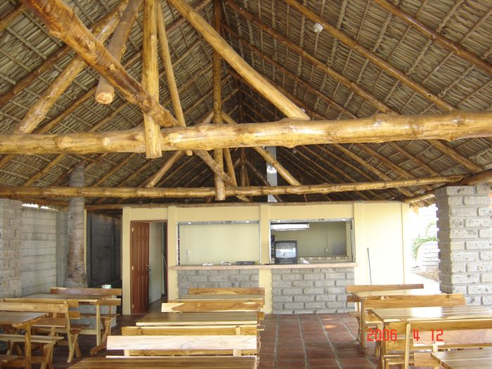
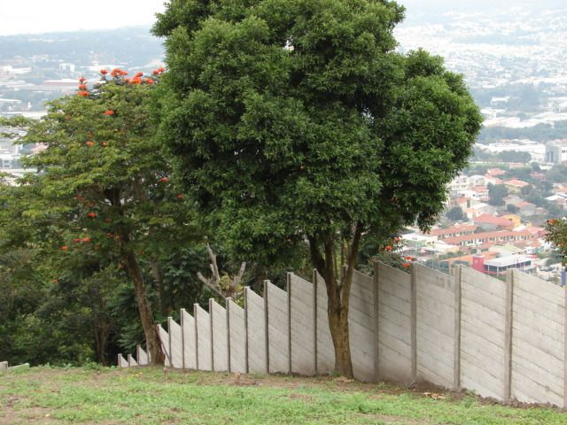

Casas, tapiales y ranchos prefabricados en El Salvador
CONSTRUPRE diseña, fabrica y construye proyectos prefabricados a la medida de cada cliente.
Construcciones Prefabricadas, hechas en El Salvador
CONSTRUPRE es una empresa 100% salvadoreña. Cada proyecto se trabaja según las necesidades, ideas y objetivos del cliente.
Trabajamos con personas que tienen un terreno y quieren construir, con familias que evalúan una casa prefabricada y con quienes necesitan un tapial, un rancho o un espacio recreativo. También desarrollamos proyectos de uso comercial.
Más de 24 años de experiencia
Sistema constructivo
- Concreto
- Alta resistencia, 210 kg/cm²
- Refuerzo
- Varillas de hierro grado 70
Proyectos
Algunas obras que pueden observarse en nuestro registro fotográfico.


Servicios
- Tapiales
- Casas básicas
- Casas con acabados
- Ranchos
- Piscinas
¿Tiene un terreno o una idea?
Conversemos sobre su proyecto y cómo podemos construirlo.